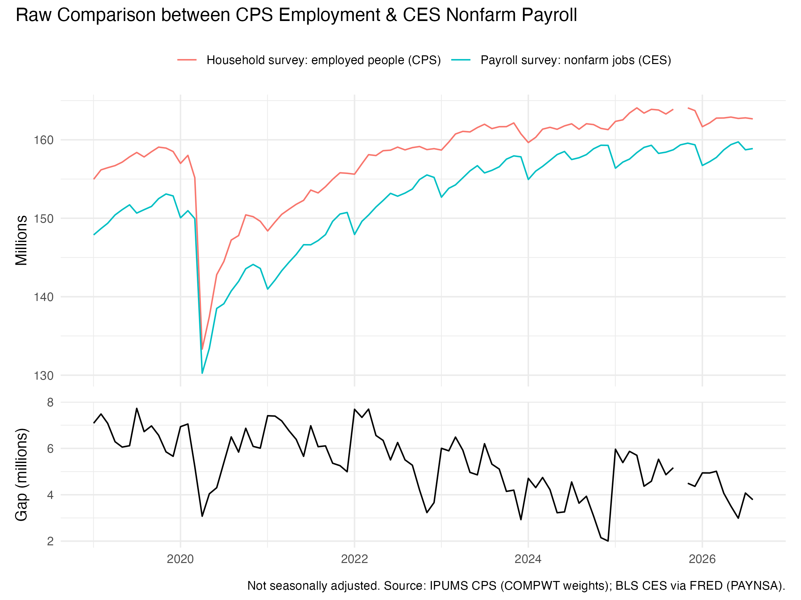
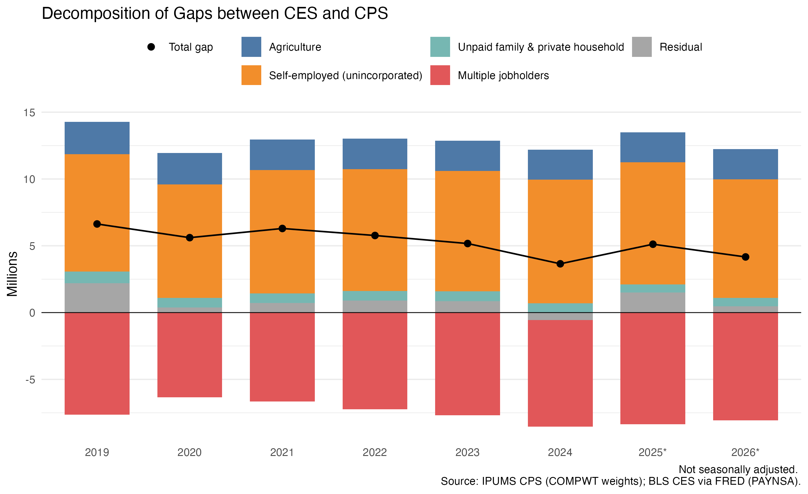
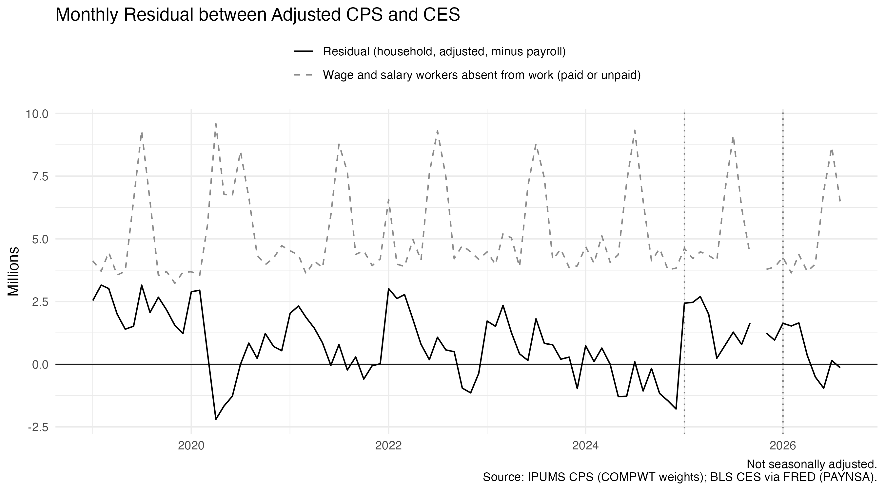

Decomposition of Differences between CES and CPS Employment Data
The Bureau of Labor Statistics (BLS) publishes two monthly measures of U.S. employment. The payroll survey, also known as the Current Employment Statistics (CES), asks businesses how many jobs they have and produces the nonfarm payroll number from my first post. The household survey, also known as the Current Population Survey (CPS), asks households whether their members are working.
A problem that the payroll number is facing is that it has become harder to read. The CES response rate hovered around 60% in the decade before the pandemic and has since fallen below 45%,1 which makes its early estimates less reliable. As such, analysts, markets and the Fed increasingly check it against the household survey. But the two don’t usually agree. In 2025 the household survey found about 163.5 million employed people, while payrolls counted about 158.4 million jobs, which is a gap of 5.1 million. Before one survey can check the other, we need to know what that gap is made of. This post asks how much of it is simply the two surveys counting different things, and how much is left over, or the residual.
Comparison between CPS and CES
| Household survey (CPS) | Payroll survey (CES) | |
|---|---|---|
| Counts | people with a job | jobs |
| Sample | about 60,000 households | about 119,000 businesses and agencies |
| A person with multiple jobs | counted once | counted multiple times |
| Self-employed, unpaid family, private-household workers | counted | not counted |
| Farm workers | counted | not counted |
| On unpaid leave | counted as employed | not counted |
The unincorporated self-employed run their own business that is not a corporation, such as a freelance designer. Unpaid family workers work without pay in a relative’s business, and private-household workers, such as nannies, are employed directly by a household.
BLS publishes a recipe, which I will call the bridge, for translating one concept into the other. Starting from household employment (HE), I subtract the groups payrolls exclude: agriculture (A), the unincorporated self-employed (S), unpaid family workers (UFW) and private-household workers (PHW). Then I add back the second jobs of multiple jobholders (M). Whatever still separates the result from payroll jobs (NFP) is the residual (R):
\underbrace{HE - NFP}_{\text{gap}} \;=\; A + S + UFW + PHW - M + R
The five bridge terms are definitional differences, each estimated from the CPS microdata. The residual is what the definitions cannot explain, so it is where at least one survey is off.
Data and weights
The household data are IPUMS CPS basic monthly microdata from January 2019 to August 2026. October 2025 is missing because the survey was not collected during the government shutdown. IPUMS distributes the CPS as one record per person surveyed rather than as the totals BLS publishes, which lets me build each bridge category myself. Payroll jobs are total nonfarm employment in their latest revised version. Both series are not seasonally adjusted, meaning the regular swings within each year, such as holiday hiring, are left in. That is because the CPS microdata are unadjusted, and both sides have to be on the same basis.
Each respondent carries a weight, the number of people they stand in for: a weight of 2,000 means 2,000 people. I use COMPWT, the composite weight BLS uses for its published estimates. It reproduces BLS’s January 2019 employment total of 154.964 million exactly, while the basic weight WTFINL overshoots it by 616,000.
The gap

The top panel plots each survey’s monthly total before any bridging, and the bottom panel plots the gap between them. The household survey sits above payrolls in every month. The gap was about 7 million in 2019 and narrowed to between 2 and 4 million by late 2024. Both series are unadjusted, so the gap wobbles with the seasons, but the jump of about 4 million between December 2024 and January 2025 is too large to be seasonal. To see what drives a move like that, the gap has to be decomposed.
Decomposition by Year: CES vs. CPS

Each bar is the number of people in one bridge category, averaged over the year. They are measured against a baseline of zero gap, which is what we would see if the two surveys counted exactly the same thing. Bars above zero are groups only the household survey counts. The red bar is second jobs, which only payrolls count, so it pulls the household count back. The grey bar is the residual, and all the bars add up to the black dot. Years with an asterisk are incomplete, since 2025 lacks October due to government shutdown, and 2026 ends in August.
Definitional differences account for most of the gap in every year: 4.4 of the 6.6 million in 2019, and 3.6 of the 5.1 million in 2025. Self-employment is the largest single component, usually around 9 million. Second jobs grew from 7.7 million in 2019 to 8.4 million in 2025. Relative to 2019, that offsets 0.7 million more of the household survey’s extra workers, which accounts for most of the 0.8 million fall in the definitional part of the gap.
The grey residual is the more interesting part. It was 2.2 million in 2019, under 1 million from 2020 to 2023, negative in 2024, and back to 1.5 million in 2025. That swing follows from how the household survey is built. Its weights are scaled so the sample adds up to the Census Bureau’s estimate of the U.S. population, so a higher estimate raises every weighted count. Each January the survey switches to new population estimates and never revises earlier months. BLS reports that the January 2025 update added 2.0 million to employment relative to the old estimates, mostly because of higher estimated immigration. My microdata show the same in that household employment usually falls about 0.8 million from December to January, but in January 2025 it rose by 1.05 million, about 1.9 million more than a typical January.
The update can also move in the other direction. In January 2026, lower estimated net migration and a Census methodology change cut household employment by 1.4 million, according to BLS. My decomposition shows a shortfall of about 1.2 million against a typical January.
Residual Analysis

The solid line is the monthly residual. Above zero, the bridged household count exceeds payrolls, and below zero, it falls short. Both population updates show up as jumps at the dotted lines, and the break in late 2025 is the missing October. The dashed line is a possible explanation the bridge leaves out. Wage and salary workers who have a job but were absent from work in the survey week.
The residual’s largest move, though, is not in a January. Between February and April 2020 it fell by about 5 million, while absent wage and salary workers jumped from 3.5 million to 9.6 million. Unpaid absentees count as employed in the household survey but not on payrolls, so if they were driving the residual it should have risen. Instead it fell. One possibility is the payroll survey’s reference period. Payrolls count anyone paid for any part of the pay period that includes the 12th of the month, so workers laid off after the 12th still appear as jobs. Another is that in-person household interviews were suspended that spring, so the household survey was measuring less precisely just when the labor market moved fastest.
Takeaway
Most of the gap between the two jobs numbers is definitional. After removing self-employment and farm work (which only the household survey counts) and adding back second jobs (which only payrolls count), the two surveys agree to within about a million in most years. The household survey can therefore check payrolls, but only after bridging and only once the residual’s large moves are explained.
Those moves have identifiable causes. In 2024 the residual went negative, meaning the household survey sat too low relative to payrolls, and the January 2025 population update then raised household employment by about 1.9 million more than a typical January. So at least part of the household survey’s weakness in 2024 came from its population base, not from the labor market. In spring 2020 the residual also went negative, but there the likelier causes are the payroll survey’s pay-period definition and disrupted household interviews. The practical rule is to compare the two surveys only after bridging, and to treat a January jump in household employment as a population revision until shown otherwise.
Data and code
- Household survey: IPUMS CPS basic monthly samples, extract
cps_00003. Sarah Flood, Miriam King, Renae Rodgers, Steven Ruggles, J. Robert Warren, Daniel Backman, Etienne Breton, Grace Cooper, Julia A. Rivera Drew, Stephanie Richards, David Van Riper, and Kari C.W. Williams. IPUMS CPS: Version 13.0 [dataset]. Minneapolis, MN: IPUMS, 2025. https://doi.org/10.18128/D030.V13.0 - Payroll survey: BLS Current Employment Statistics, total nonfarm, not seasonally adjusted, via FRED (
PAYNSA), accessed 28 September 2026. - Bridge method: BLS, Employment from the CPS adjusted to the CES concept.
- Population controls: BLS, January 2025 adjustments and January 2026 adjustments.
- Code: github.com/1iiiiii/Data-Visualization-in-R.
Footnotes
Federal Reserve Bank of San Francisco, Do Low Survey Response Rates Threaten Data Dependence?, Economic Letter, March 2025. https://www.frbsf.org/research-and-insights/publications/economic-letter/2025/03/do-low-survey-response-rates-threaten-data-dependence/↩︎